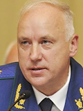

Бастрыкин А.И.
Председатель Следственного комитета Российской Федерации
Биография:
Бастрыкин Александр Иванович родился 27 августа 1953 г. в Пскове. В 1975 г. окончил юридический факультет Ленинградского государственного университета (ЛГУ) им. А.А.Жданова, в г. - аспирантуру ЛГУ, доктор юридических наук (1987, тема диссертации - "Проблемы взаимодействия норм внутригосударственного и международного права в сфере уголовного судопроизводства"), профессор.
- 1975-1977
- служба в органах МВД СССР;
- 1977-1980
- аспирант,
- 1980-1982
- секретарь комитета ВЛКСМ ЛГУ;
- 1982-1983
- секретарь Ленинградского горкома ВЛКСМ г. Ленинграда;
- 1983-1985
- секретарь Ленинградского обкома ВЛКСМ;
- 1985-1986
- старший преподаватель юридического факультета;
- 1986-1988
- заместитель секретаря парткома ЛГУ;
- 1988-1991
- директор Института усовершенствования следственных работников при Прокуратуре СССР, заведующий кафедрой следственной тактики, г. Ленинград;
- 1992
- заведующий кафедрой права Гуманитарного университета профсоюзов, г. Санкт-Петербург;
- 1992-1994
- ректор Санкт-Петербургского юридического института; профессор Санкт-Петербургского юридического института;
- 1994-1995
- заведующий кафедрой транспортного права;
- 1995
- профессор кафедры транспортного права Санкт-Петербургского государственного университета водных коммуникаций;
- 1995-1996
- помощник командующего войсками Северо-Западного округа внутренних войск РФ по правовой работе;
- 1996-1998
- директор Северо-Западного филиала Российской правовой академии Министерства юстиции РФ, г. Санкт-Петербург;
- 1998-2001
- заместитель начальника Федерального управления Министерства юстиции РФ по Северо-Западному федеральному округу, г. Санкт-Петербург;
- 2001-2005
- руководитель Главного управления Министерства юстиции РФ по Северо-Западному федеральному округу, г. Санкт-Петербург;
- 2005-2006
- начальник Главного управления Министерства внутренних дел РФ по Центральному федеральному округу;
- с июня 2006 г.
- заместитель Генерального прокурора РФ; член Совета при Президенте РФ по противодействию коррупции (утвержден Указом Президента РФ от 19 мая 2008 г.);
- с октября 2006 г.
- Постановлением Совета Федерации назначен на должность Первого заместителя Генерального прокурора Российской Федерации - Председателя Следственного комитета при прокуратуре Российской Федерации;
- 22 июня 2007 г.
- Президентом Российской Федерации подписан Указ № 1204 о возложении на А.И.Бастрыкина исполнения обязанностей Председателя Следственного комитета Российской Федерации;
- 4 октября 2010 г.
- Указом Президента Российской Федерации от 14 января 2011 года № 39 назначен Председателем Следственного комитета Российской Федерации.